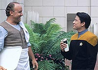
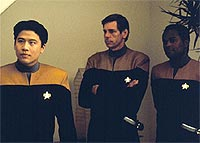
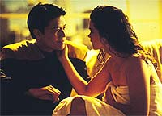
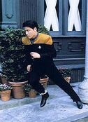

|
MANCHETE
DO EPISDIO
Harry Kim e Tom Paris se beneficiam
de uma providencial volta Terra
Episdio
anterior | Prximo
episdio
Sinopse:
Data Estelar: 49011.0.
O alferes Harry Kim acorda em So Francisco, na Terra. Embora sua
memria dos eventos ocorridos em Voyager at esta data estejam
intactas, a realidade sua volta indica que ele nunca se
apresentou para servir a bordo da USS Voyager, e logo, no est
preso no quadrante Delta.
 Em
vez disso, Kim trabalha como especialista em design para a diviso
de engenharia da Frota Estelar e est para casar com sua antiga
namorada, Libby. Checando os bancos de dados da Federao Harry
descobre que alm dele Tom Paris tambm no embarcou em Voyager,
e vai procura do parceiro (que obviamente no o conhece nessa
realidade alternativa).
Porm, ao fazer isso, Kim apontado como suspeito de ser um espio
Maquis, agindo em parceria com Paris. Alm de tentar provar sua
inocncia, Harry Kim procura uma maneira de voltar para sua prpria
realidade.
 Durante
essa investigao, Kim descobre que o padeiro Cosimo na verdade
um aliengena, responsvel pela anomalia que causou as mudanas
no espao-tempo e o consequente envio de Kim Terra. Cosimo
explica que est l para acompanhar a adaptao do alferes
nova vida, mas Harry se recusa a aceitar a nova realidade.
Disposto a restaurar os eventos originais, e de posse de informaes
dadas por Cosimo, ele e Tom Paris roubam um Explorador e voltam
anomalia, onde conseguem restaurar a linha do tempo original,
devolvendo os dois Voyager.
Comentrios:
"Non Sequitur"
mostra como bom estar de volta Terra. O episdio no s
ganha fora por mostrar um pouco mais da personalidade de Harry
Kim, como tira muito de seu carisma por ofertar ao telespectador uma
visita San Francisco do sculo 24.
No que seja um verdadeiro tour da Terra do futuro, mas s pela
paisagem da janela de Kim, j vale a visita. O reaproveitamento de
cenas do quartel-general da Frota Estelar e da ponte Golden Gate,
ambas tiradas de trechos dos filmes de Jornada para o cinema,
tambm aumentam o valor nostlgico de se estar de volta ao lar.
Sentimentos de "revival" parte, ningum escreve um
episdio ambientado na Terra com um dos personagens principais no
planeta em uma srie em que todos supostamente deveriam estar
isolados do outro lado da Via Lctea e sai impune. Como penalidade,
a histria precisa ser recheada com tecnobaboseira.
 S
esse mtodo pode explicar a ida do pobre Harry Kim Terra, as
mudanas histricas decorrentes dessa viagem e o meio que o
alferes possui para voltar realidade de onde veio, contrariando
todas as probabilidades. Nenhum deles pareceu totalmente
convincente, mas a interessante premissa do episdio perdoa
quaisquer desculpas que tiveram de ser inventadas no caminho.
Embora a histria seja quase 100% Harry Kim, a mensagem que fica
a do sentimento de famlia que est se formando a bordo da
Voyager. Mesmo estando de volta Terra, com um bom emprego e uma
boa mulher, Kim decide arriscar tudo para tentar voltar realidade
a qual ele pertence, mesmo sabendo que as chances de sucesso so mnimas.
Tudo para dar uma chance a Tom Paris de se redimir, voltando a fazer
parte da tripulao da Voyager, e retornar ao lugar que o alferes
deveria estar, mesmo sendo a 70 mil anos-luz de casa.
Alis, Paris ganha um destaque especial nesse episdio --com um
insight at maior que o de Kim no quesito "vida que poderia
ter tido e no teve". O conflito entre os dois amigos no bar
em Marselha memorvel --um dos dilogos mais cortantes da srie,
e uma rara oportunidade de ver dois personagens principais em
conflito. Grande atuao de Garrett Wang e, especialmente, Robert
Duncan McNeill.
A redeno do Paris alternativo, que decide ajudar Kim mesmo
depois do quebra-pau entre os dois, pouco convincente, mas
bastante eficiente em termos de dar alguma emoo histria. A
fuga dos dois com o Explorador a sequncia
"adrenalina" do segmento, e cumpre sua funo enquanto
tal.
 Por
fim, a introduo do elemento aliengena do episdio, trazida
tona pelo personagem Cosimo --um extraterrestre que se faz passar
por um padeiro italiano s para poder ver a adaptao de Harry
Kim s mudanas no espao-tempo-- bem executada, no porque a
histria que ele conte seja verossmil, mas pela simpatia e pelo
carisma do personagem. impossvel imaginar que haja alguma inteno
hostil partindo dele.
Por todas essas razes, e apesar dos tropeos, "Non
Sequitur" acaba se firmando como um dos bons segmentos da
segunda temporada de Voyager, no s pelo grau de entretenimento
que proporciona, mas pela oportunidade, rara na srie, de oferecer
aos personagens a chance de evolurem. Os beneficiados da vez foram
Paris e Kim.
Citaes:
Lasca - "Harry, you
better be dying."
("Harry, melhor estar morrendo.")
Kim - "Why does everyone say 'relax' when they're about to
do something terrible?"
("Por que todo mundo diz 'relaxa' quando esto prestes a fazer
algo terrvel?")
Trivia:
 Em uma medida de conteno de custos,
uma cena do episdio "Relics" da Nova Gerao
foi reutilizada. Repare quando Tom Paris e Harry Kim fogem a bordo
de um Explorador ("Runabout"), eles passam pelo portal da
Esfera Dyson de "Relics", que aqui utilizada
como porta da doca espacial da Frota.
Em uma medida de conteno de custos,
uma cena do episdio "Relics" da Nova Gerao
foi reutilizada. Repare quando Tom Paris e Harry Kim fogem a bordo
de um Explorador ("Runabout"), eles passam pelo portal da
Esfera Dyson de "Relics", que aqui utilizada
como porta da doca espacial da Frota.
O ator Jack Shearer, que aqui interpreta
o almirante Strickler, apareceu em "Jornada nas Estrelas -
Primeiro Contato" como o almirante Hayes. Esse mesmo
personagem (Hayes) esteve presente nos episdios "Hope and
Fear" e "Life Line", de Voyager.
Shearer tambm participou dos episdios de Deep Space Nine
"The Forsaken", como o embaixador Vadosia, e "Visionary".
como Ruwon. Jack Shearer veterano da televiso americana, e alm
de Jornada, j fez participaes em sries como "Seinfeld",
"Murphy Brown", "Mad About You", "O
Desafio", "Ally McBeal" e "Arquivo-X".
Repare em uma cena onde Harry Kim acessa
sua ficha de servio. L consta que o nome do alferes Harry S.
L. Kim. Nunca foi revelado o quer esse "S. L." quer dizer,
mas Garrett Wang, o ator que interpreta Kim, sugeriu que fosse algo
como "Sexy Lips"...
Ficha
tcnica:
Escrito por Brannon Braga
Dirigido por David Livingston
Exibido em 25/09/1995
Produo: 022
Elenco:
Kate Mulgrew como
Kathryn Janeway
Robert Beltran como Chakotay
Roxann Biggs-Dawson como B'Elanna Torres
Robert Duncan McNeill como Tom Paris
Jennifer Lien como Kes
Ethan Phillips como Neelix
Robert Picardo como Doutor
Tim Russ como Tuvok
Garrett Wang como Harry Kim
Elenco convidado:
Louis Giambalvo como Cosimo
Jennifer Gatti como Libby
Jack Shearer como almirante Strickler
Mark Kiely como tenente Lasca
Episdio
anterior | Prximo
episdio
|